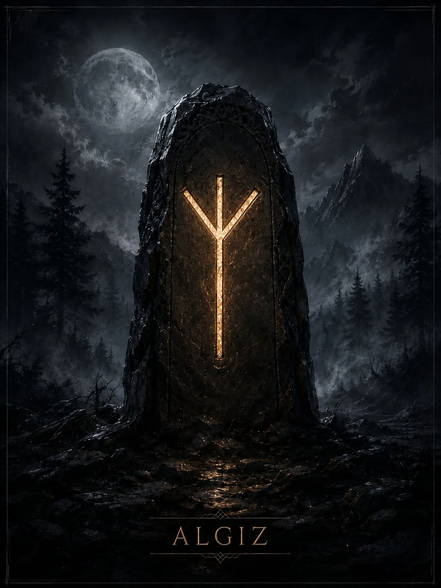

Современная руна защиты, бдительности и контакта с тем, что человек считает более высоким ориентиром. Историческое имя при этом остаётся спорным.
Краткая суть
Современная руна защиты, бдительности и контакта с тем, что человек считает более высоким ориентиром. Историческое имя при этом остаётся спорным.
Историческая традиция
Этимология и исходное значение Algiz/Elhaz обсуждаются в рунологии; встречаются реконструкции через лося и через растительный образ. Популярное современное прочтение как универсального «щита» сложилось значительно позднее и не должно выдаваться за прямую древнюю инструкцию.
- Ключевые значения: защита, бдительность, граница, покровительство, безопасность, интуиция, сигнал, опора
Современная мантика
Мантические значения относятся к современной рунической практике.
- Положительное проявление: Хорошая защита, своевременное предупреждение, поддержка, способность заметить риск до столкновения.
- Негативное проявление: Уязвимость, ложное чувство безопасности, чрезмерная подозрительность, слабые границы.
- Совет: Укрепи границы и обрати внимание на предупреждающие сигналы, но проверяй их фактами.
- Предупреждение: Не превращай осторожность в постоянный поиск угрозы.
- Итог ситуации: Ситуация проходит под хорошей защитой или требует дополнительных мер безопасности.
Психологическое состояние
Состояние повышенной бдительности; конструктивная форма — разумная осторожность, теневая — жизнь в ожидании угрозы.
Духовное значение
Развитие внутреннего ориентира и умения отличать интуитивную осторожность от страха.
Прямое и перевёрнутое положение
Мантическая трактовка и работа с перевёрнутыми положениями относятся к современной рунической практике. Для Старшего Футарка не сохранилось древнего руководства, которое задавало бы такой способ гадания как единственно правильный. Перевёрнутая Algiz в современных школах — уязвимость, потеря поддержки, игнорирование предупреждений или ослабленные границы.
Отличия трактовок разных школ
Именно у Algiz особенно важно не смешивать спорную историческую этимологию и почти универсальное современное значение «защита».
Итог
Современная руна защиты, бдительности и контакта с тем, что человек считает более высоким ориентиром. Историческое имя при этом остаётся спорным.
Финансы
страхование рисков, защита накоплений, осторожность в сделке.
Работа
поддержка руководства или команды, защита репутации, необходимость соблюдать безопасность и правила.
Отношения
бережные границы, желание защищать партнёра; в тени — закрытость и подозрительность.
Семья и быт
безопасность дома, защита интересов семьи, внимательность к рискам.
Руна как характеристика человека
Осторожный, наблюдательный, защищающий себя и близких человек; иногда чрезмерно настороженный.
- Мысли: оценивает риски и ищет безопасный вариант.
- Чувства: забота, осторожность, потребность чувствовать защищённость.
- Действия: поставит границы, подстрахует, предупредит, обратится за поддержкой.
Современное магическое значение
Это современная эзотерическая практика, а не исторически подтверждённая традиция.
- Современная магическая трактовка: защита, охрана границ, предупреждение, усиление ощущения безопасности.
- Задачи: обереги, защита дома/проекта, усиление защитной части формулы.
- Усиливает: границы, осторожность, устойчивость к внешнему давлению.
- Ослабляет: проникновение и бесконтрольное влияние извне.
- Риск: построить чрезмерно закрытую систему, которая блокирует и полезные контакты.
Руна в формулах и ставах
Algiz обычно выполняет защитную функцию: Algiz+Othala — защита дома; Algiz+Raidho — защищённая дорога; Algiz+Eihwaz — стойкая многоуровневая защита.
Эзотерическая трактовка
В современной эзотерической трактовке
В современной диагностике Algiz чаще показывает состояние защиты: прямая — защита действует, перевёрнутая — границы считаются ослабленными.
Возможное бытовое объяснение
Альтернативное объяснение
Бытовая альтернатива: качество реальных мер безопасности, способность говорить «нет», поддержка окружающих, тревожность или недостаток планирования риска.
Характерные сочетания
- Algiz + Othala: защита дома и имущества.
- Algiz + Raidho: безопасная дорога.
- Algiz + Thurisaz: активная защита с отпором.
Руна в формулах и ставах
Algiz обычно выполняет защитную функцию: Algiz+Othala — защита дома; Algiz+Raidho — защищённая дорога; Algiz+Eihwaz — стойкая многоуровневая защита.
Мантические, магические и диагностические значения относятся к современной рунической практике. Историческая часть опирается на рунические поэмы и эпиграфику. Материалы носят справочный и развлекательный характер.